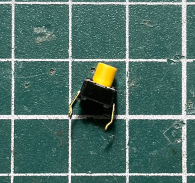
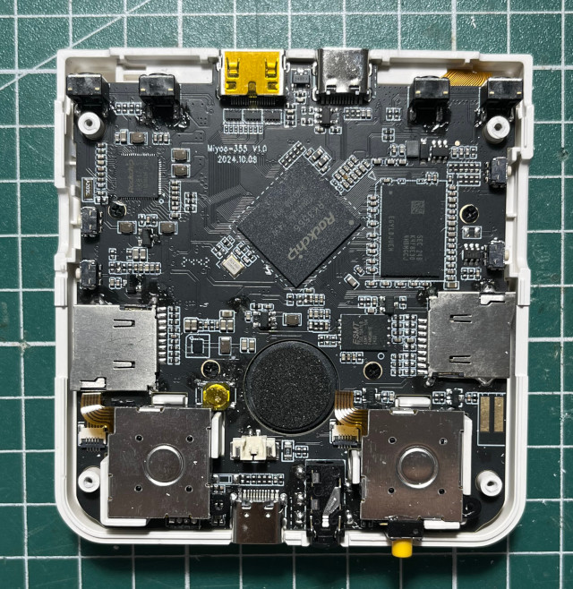
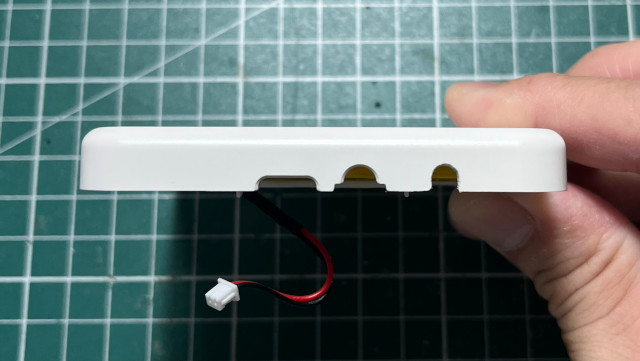
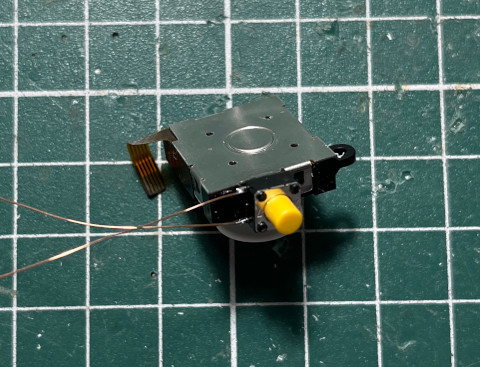
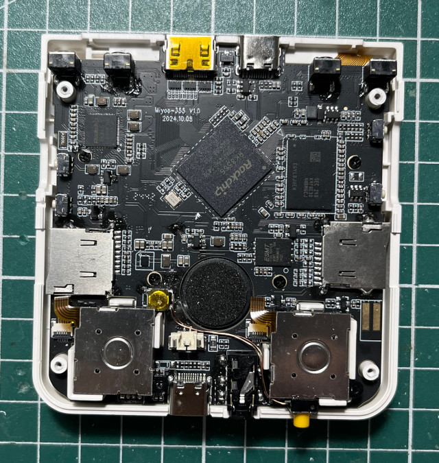
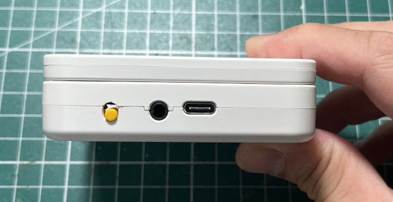

其實司徒一開始是將MASKROM按鍵連接到R2，因此，只要開機按下R2就可以進入MASKROM模式，但是，進入系統後，MASKROM腳位會被拉到低電位，導致R2按鍵一直處於被按下的狀態，司徒也嘗試使用數位開關做替換，但是都無法正常進入MASKROM模式，無奈只好焊接一顆按鍵






$ sudo dmesg -c
[ 8018.059804] usb 1-1: new high-speed USB device number 25 using xhci_hcd
[ 8018.208353] usb 1-1: New USB device found, idVendor=2207, idProduct=350a, bcdDevice= 1.00
[ 8018.208363] usb 1-1: New USB device strings: Mfr=0, Product=0, SerialNumber=0
$ lsusb
Bus 001 Device 025: ID 2207:350a Fuzhou Rockchip Electronics Company